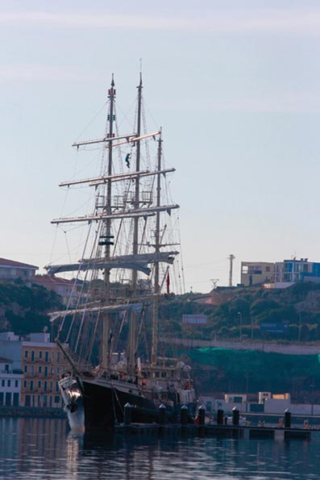

Menorca, the best nautical scene
Menorca lives facing the sea. The island is much more than 702 kilometres of land. It is also the sea that surrounds it. Don’t lose the opportunity to discover the island by sea. You will find a varied choice of ways to do it through Menorcan companies.
Can you imagine arriving at a small cove by sail? Or on a Menorcan llaüt? Wouldn’t you like to see the sunset from a small boat made in Menorca and anchored in the Mediterranean? Menorca can offer all the facilities for you to enjoy these pleasures.
 Menorca also has important maritime competitions. The Menorcan children learn to handle boats from when they are small, and take part in competitions. The Panerai Trophy, a challenge for classic yachts, the Sant Joan (St. John) regatta and others that have the island as the starting or finishing point, unique occasions to contemplate the Mediterranean decorated with white sails from the yachts.
Menorca also has important maritime competitions. The Menorcan children learn to handle boats from when they are small, and take part in competitions. The Panerai Trophy, a challenge for classic yachts, the Sant Joan (St. John) regatta and others that have the island as the starting or finishing point, unique occasions to contemplate the Mediterranean decorated with white sails from the yachts.
Menorca cannot be understood without the sea. You enjoy it too.